PROJET PHOTOGRAPHIQUE "LES 8 CONCEPTS"
Réalisation d'une édition photographique portant sur le sujet de 8 concepts.
Chaque concept photographique comporte entre 1 et 8 photos. Cette édition m'a permis
d'explorer plusieurs thèmes et de diversifier mes photographies. Cela m'a aidé à me
questionner sur ce qui pouvait m'intéresser et sur les sujets que j'aimais aborder.
 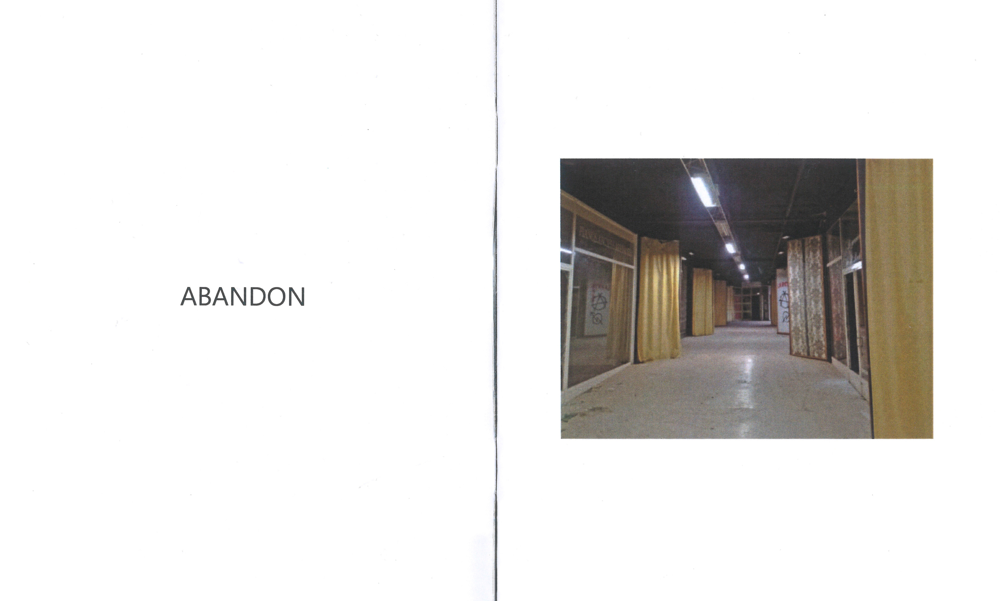
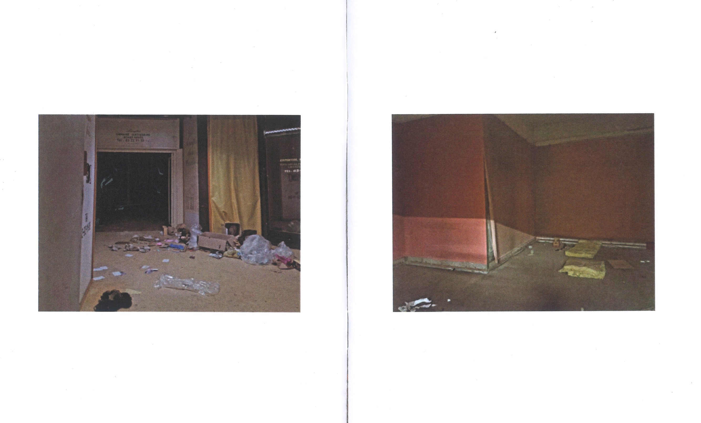
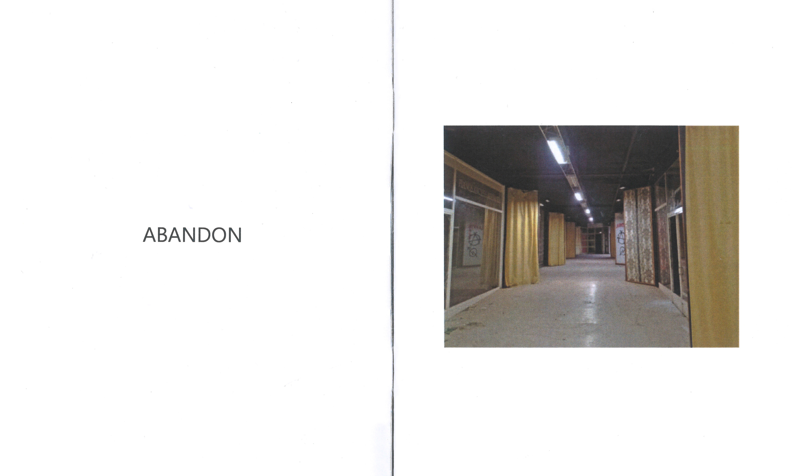
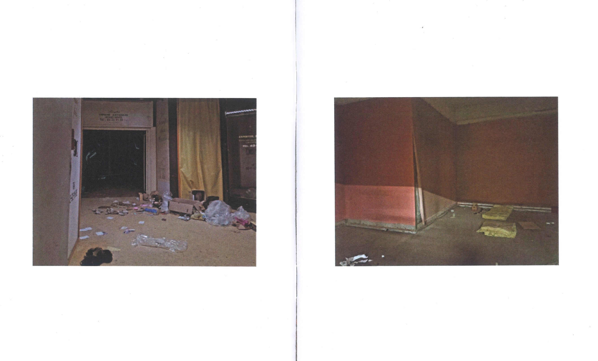
 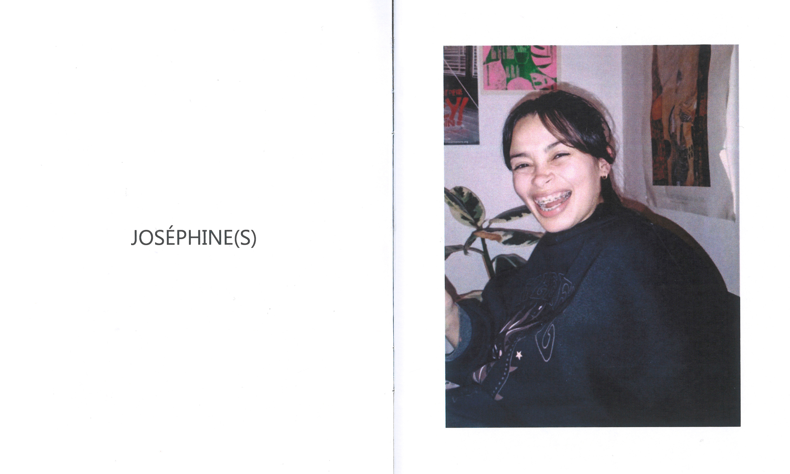
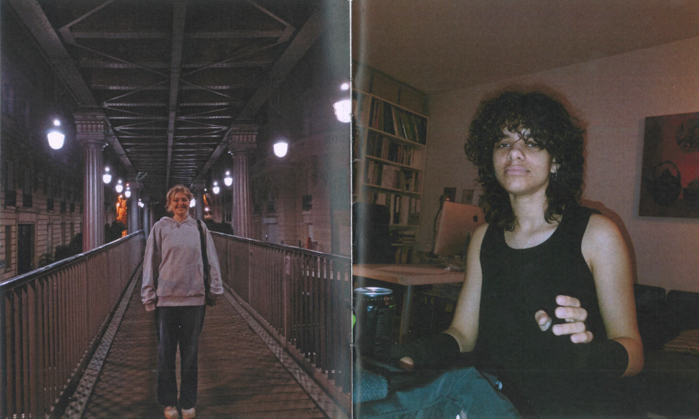
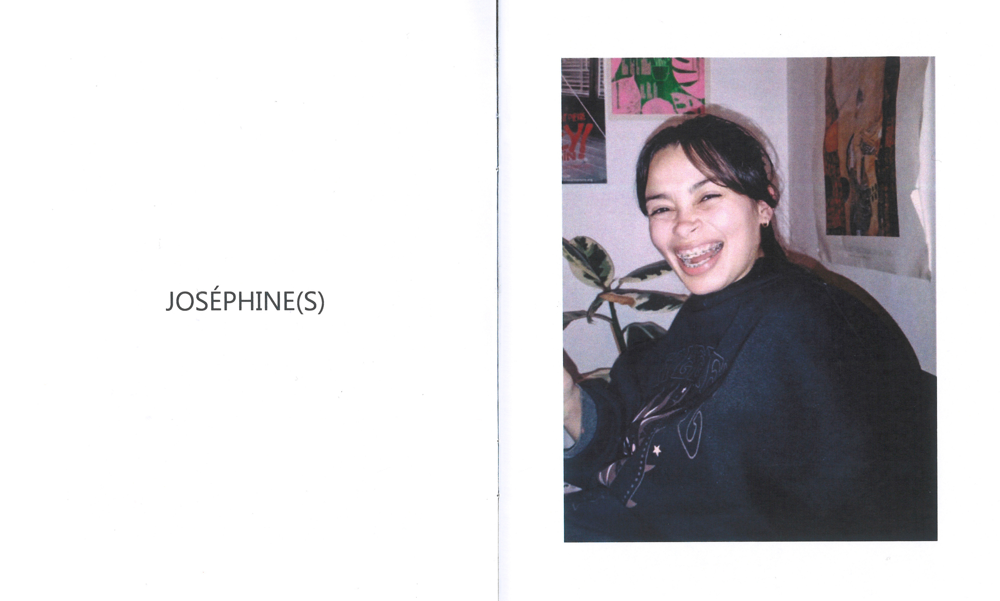
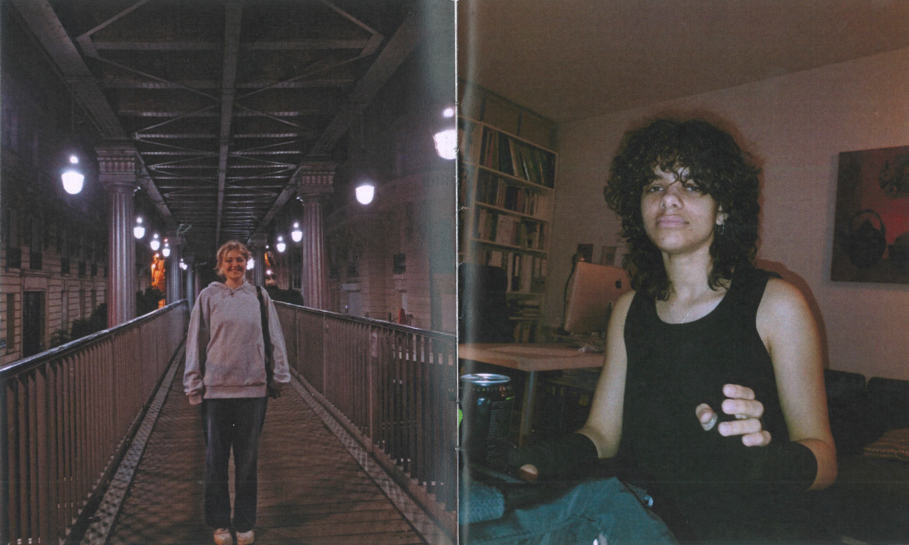
 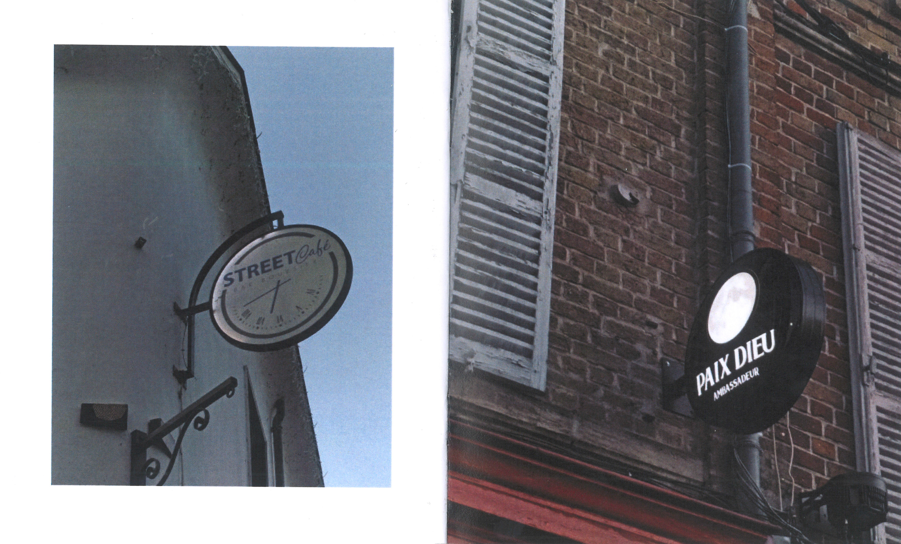
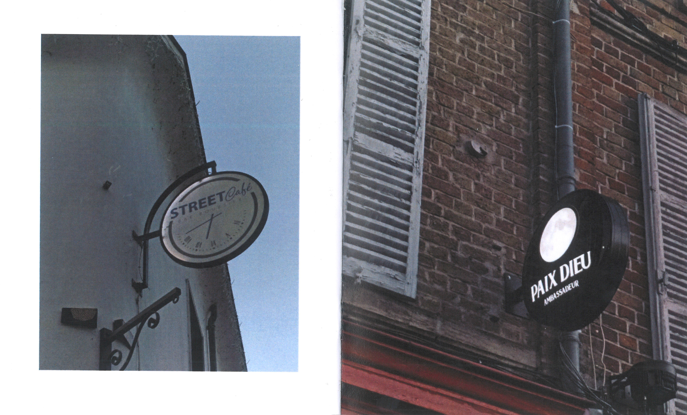
 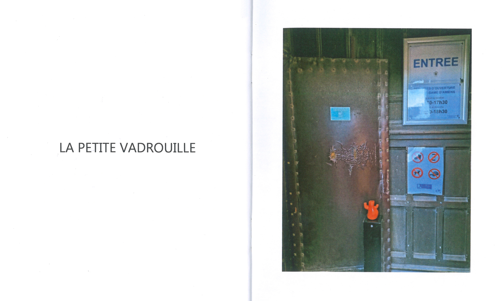
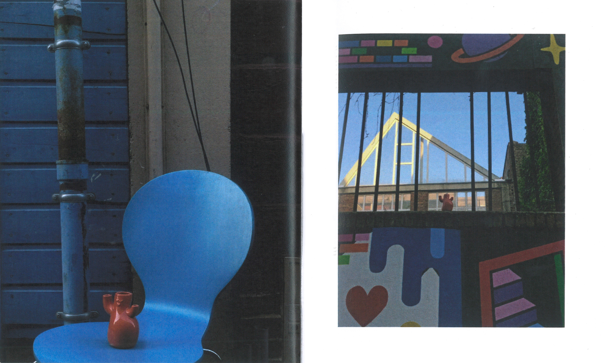
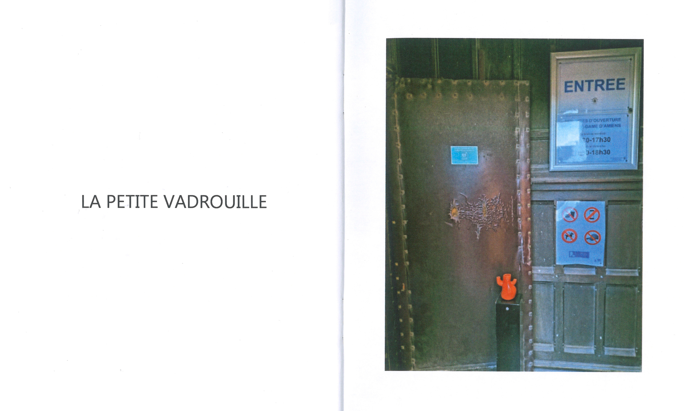
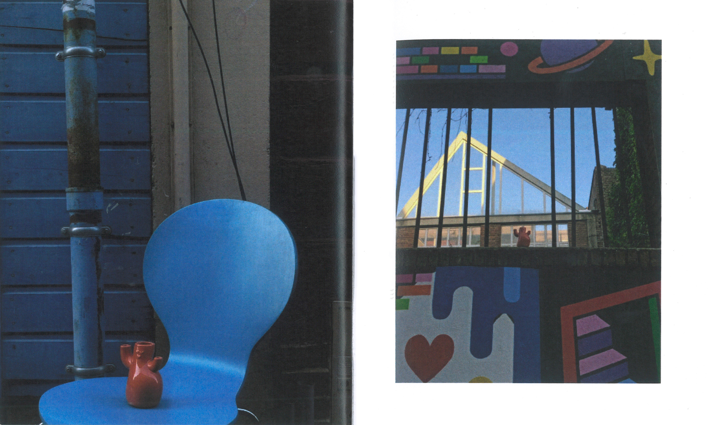